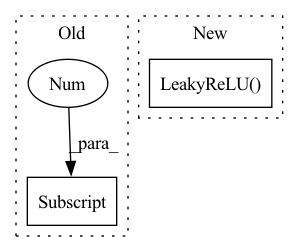

Pattern ID :21699
Before Change
EqualizedConv2d(resl2ch[4]+1, resl2ch[4], 3, padding=1, bias=False),
FusedLeakyReLU(resl2ch[4]),
Flatten(),
EqualizedLinear(resl2ch[4]*4**2, resl2ch[4] ),
FusedLeakyReLU(resl2ch[4]),
EqualizedLinear(resl2ch[4], 1)
]After Change
nn.LeakyReLU(0.2, inplace=True),
Flatten(),
Linear("elr", ochannels*(resl**2), ochannels),
nn.LeakyReLU( 0.2, inplace=True) ,
Linear("elr", ochannels, 1)
])
self.blocks = nn.Sequential(*blocks)In pattern: SUPERPATTERN
Frequency: 3
Non-data size: 2
Instances Fragment ID: 69302049
Project Name: stomoya/animeface
Commit Name: b3652bae109c713da926d5532eb014b02135da52
Time: 2020-12-14
Author: blackie0110@gmail.com
File Name: implementations/StyleGAN2/model.py
M Class Name: Discriminator
N Class Name: Discriminator
M Method Name: __init__(7)
N Method Name: __init__(1)
M Parent Class: nn.Module
N Parent Class: nn.Module
M File Name: implementations/StyleGAN2/model.py
N File Name: implementations/StyleGAN2/model.py
M Start Line: 354
M End Line: 387
N Start Line: 364
N End Line: 389
Before Change
// In MCCA our eigenvalue problem Cv = lambda Dv
C_whitened = R @ C @ R.T
eigvals = torch.linalg.eigh(C_whitened)[0]
// Sort eigenvalues so lviewest first
idx = torch.argsort(eigvals, descending=True)
After Change
// leaky relu encourages the gradient to be driven by positively correlated dimensions while also encouraging
// dimensions associated with spurious negative correlations to become more positive
eigvals = torch.nn.LeakyReLU() (eigvals[torch.gt(eigvals, 0)] - 1)
corr = eigvals.sum()
Fragment ID: 69302064
Project Name: jameschapman19/cca_zoo
Commit Name: 50fd54a937774f427cb76e09992093dff9112ce6
Time: 2021-07-14
Author: james.chapman.19@ucl.ac.uk
File Name: cca_zoo/deepmodels/objectives.py
M Class Name: MCCA
N Class Name: MCCA
M Method Name: loss(1)
N Method Name: loss(1)
M Parent Class:
N Parent Class:
M File Name: cca_zoo/deepmodels/objectives.py
N File Name: cca_zoo/deepmodels/objectives.py
M Start Line: 65
M End Line: 73
N Start Line: 65
N End Line: 78
Before Change
modules.append(
nn.Sequential(
nn.ConvTranspose2d(embedding_dim,
hidden_dims[-1] ,
kernel_size=3,
stride=2,
padding=1,After Change
nn.Sequential(
nn.Conv2d(in_channels, embedding_dim,
kernel_size=1, stride=1),
nn.LeakyReLU() )
)
self.encoder = nn.Sequential(*modules) Fragment ID: 69302055
Project Name: antixk/pytorch-vae
Commit Name: bb1f447818c4ad08c3fb2f9afd0de163534f81ea
Time: 2020-02-14
Author: anandkrish894@gmail.com
File Name: models/vq_vae.py
M Class Name: VQVAE
N Class Name: VQVAE
M Method Name: __init__(7)
N Method Name: __init__(7)
M Parent Class: BaseVAE
N Parent Class: BaseVAE
M File Name: models/vq_vae.py
N File Name: models/vq_vae.py
M Start Line: 143
M End Line: 214
N Start Line: 88
N End Line: 160